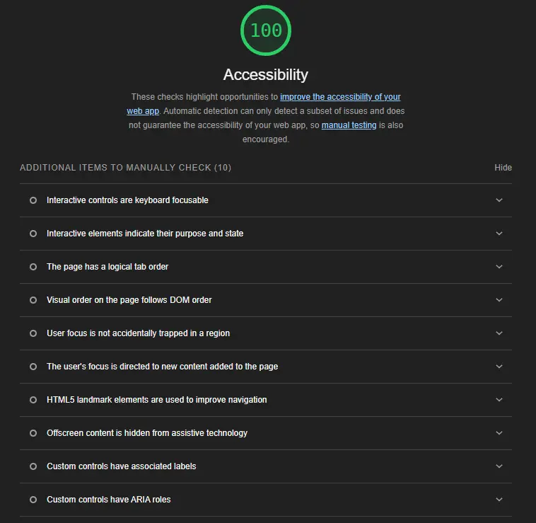
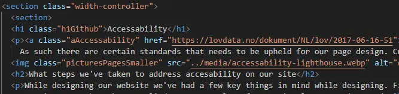

Accessability is mandated by law in Norway. As such there are certain standards that needs to be upheld for our page design. Currently lighthouse seems to think our site is upholding accessability standards quite well.
While designing our website we've had a few key things in mind while designing. First and foremost we tried to use appropriate semantic elements wherever possible. We also made sure that various assisstive technology can access the site. And also ensuring that content is appropriatly rendered for people with visual impairment.
It's important that websites scale responsivly to different screensizes. Therefore we've added mediaqueries to the site for varying screen sizes. This way no matter what device or screen-size you access our page from the content will all display in a way that doesn't break the layout.
Various tags have been applied, some examples of semantic elements we've used: <header>, <main>, <nav>, <footer> and <section> They help screenreaders navigate the page properly, giving valuable information on where and what the user is looking at. As such they played a part in making sure the content of our site is easily viewable in an understandable way for people using screenreaders.
We've also made efforts to have heading elements (<h1>, <h2> etc.) be used in an descending manner. This again helps screenreaders navigate properly.
Additionally we've put alt text on all images so that people with images disabled, or people using screenreaders can still browse our site without losing context.
We've added some keyboard navigation functionality for our hamburger menu. Tabindexes make it possible to navigate to elements of the page that traditional html language might not allow you to use tab to access.
We've also put ARIA properties to these elements so that assistive technology can properly parse and see what it's looking at.
Color contrast has been attempted to be kept high, to decrease the likelyhood that users will struggle to make out content. This is especially important for users with visual impairments.
Since we've included a video on our Mathemical modelling page, it should have transcription. This is to ensure that people with hearing difficulties can still access content. If you're hard of hearing or deaf video content can be rendered completely useless without captions, transcripts or audio descriptions.